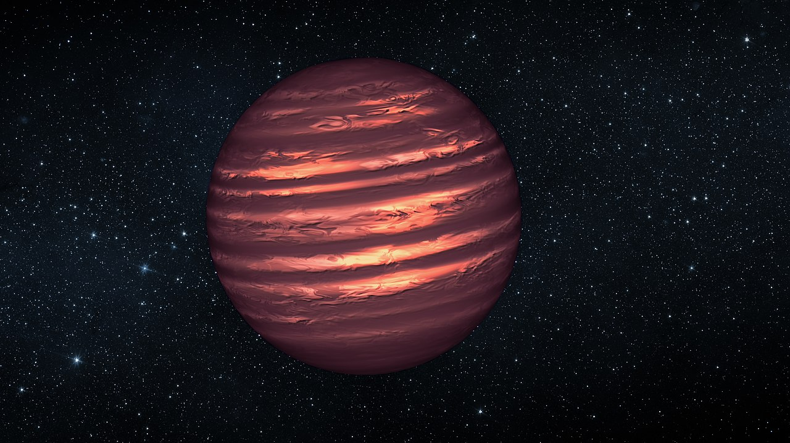
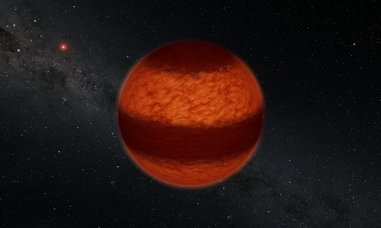
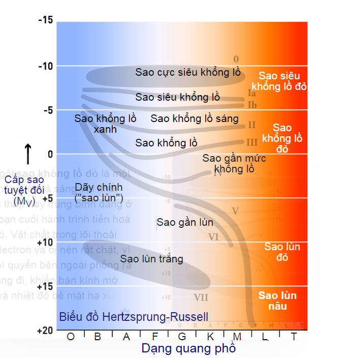

SAO LÙN NÂU
ĐỊNH NGHĨA
Sao lùn nâu (tiếng Anh: Brown dwarf) là các thiên thể dưới sao, có khối lượng dưới mức đủ để duy trì các phản ứng tổng hợp hạt nhân đốt cháy hydro trong lõi, như các ngôi sao thuộc dãy chính, nhưng có bề mặt và phần bên trong hoàn toàn đối lưu, và không có sự khác biệt hóa học theo chiều sâu. Các ngôi sao lùn nâu có khối lượng trong khoảng khối lượng những hành tinh kiểu giữa hành tinh khí khổng lồ và những ngôi sao có khối lượng thấp nhất; giới hạn trên này ở giữa khoảng 75[2] và 80 lần khối lượng Sao Mộc
. Hiện tại có một số tranh cãi về tiêu chí nào được sử dụng để định nghĩa sự khác biệt giữa sao lùn nâu với một hành tinh khổng lồ ở các khối lượng sao lùn nâu rất thấp và liệu các ngôi sao lùn nâu ở một số thời điểm của mình có xảy ra phản ứng tổng hợp hạt nhân hay không. Trong bất kỳ trường hợp nào, những sao lùn nâu nặng hơn 13
làm tan chảy deuteri và những ngôi sao trên ~65
cũng làm tan chảy lithi. Những hành tinh duy nhất được phát hiện quay xung quanh các ngôi sao lùn nâu là 2M1207b và MOA-2007-BLG-192Lb.


ĐẶC ĐIỂM
Một đặc điểm đáng chú ý của các sao lùn nâu là chúng hầu như có cùng bán kính, hơn hoặc kém bán kính Sao Mộc. Với những sao có khối lượng lớn nhất (60-90 lần khối lượng Sao Mộc), thể tích của một sao lùn nâu được quyết định chủ yếu bởi áp suất thoái hóa electron[3], tương tự như với các sao lùn trắng; với những ngôi sao có khối lượng thấp nhất (1-10 lần khối lượng Sao Mộc), thể tích của chúng được quyết định chủ yếu bởi áp suất Coulomb, tương tự các hành tinh. Kết quả thực là bán kính của sao lùn nâu chỉ thay đổi khoảng 10-15% đối với mọi khối lượng. Điều này có thể khiến việc phân biệt chúng với các hành tinh khá khó khăn.
Ngoài ra, nhiều sao lùn nâu không trải qua giai đoạn tổng hợp hạt nhân; những ngôi sao có khối lượng thấp (dưới 13 lần khối lượng Sao Mộc) không bao giờ đủ nóng để tổng hợp thậm chí là deuterium, và thậm chí các sao có khối lượng lớn nhất (hơn 60 lần khối lượng Sao Mộc) lạnh đi đủ nhanh để chúng không trải qua giai đoạn tổng hợp sau một khoảng thời gian khoảng 10 triệu năm. Tuy nhiên, có hai cách để phân biệt sao lùn nâu với các hành tinh:
Mật độ là một cách phân biệt rõ. Các sao lùn nâu đều có cùng cỡ bán kính; vì thế bất kỳ vật thể nào với khối lượng gấp hơn 10 lần Sao Mộc đều có thể không phải là một hành tinh.
Quang phổ tia X và hồng ngoại cũng là một dấu hiệu nhận biết. Một số sao lùn nâu phát ra tia X; và tất cả các sao lùn nâu "ấm" tiếp tục tiến về phía quang phổ đỏ và hồng ngoại cho tới khi chúng nguội đi tới nhiệt độ như các hành tinh (dưới 1000 K).
Hiện nay, Liên đoàn Thiên văn Quốc tế coi các vật thể với khối lượng vượt trên giới hạn khối lượng cho các phản ứng nhiệt hạch deuterium (hiện được tính khoảng 13 lần khối lượng Sao Mộc với các vật thể Sao Kim loại) là một sao lùn nâu, trong khi đó những vật thể dưới mức khối lượng đó (và bay quanh một ngôi sao hay các tàn tích sao) được coi là các hành tinh.
LỊCH SỬ
Sao lùn nâu (brown dwarf), một thuật ngữ do Jill Tarter đặt ra năm 1975, ban đầu được gọi là sao lùn đen, một kiểu xếp hạng các vật thể dưới sao có màu tối, trôi nổi tự do trong vũ trụ, có khối lượng quá thấp để duy trì phản ứng tổng hợp hydro ổn định (thuật ngữ sao lùn đen hiện chỉ một ngôi sao lùn trắng đã lạnh đi tới mức không còn phát xạ nhiệt độ hay ánh sáng). Những tên khác đã được đề xuất, gồm Planetar và Substar.
Những lý thuyết ban đầu liên quan tới trạng thái của những ngôi sao có khối lượng thấp nhất và giới hạn đốt cháy hydro cho rằng các vật thể với khối lượng nhỏ hơn 0.07 khối lượng Mặt Trời đối với các vật thể thuộc Population I hay các vật thể với khối lượng nhỏ hơn 0.09 khối lượng Mặt Trời đối với các vật thể thuộc Population II sẽ không bao giờ đi theo quá trình tiến hóa sao thông thường mà sẽ trở thành một ngôi sao suy thoái hoàn toàn (Kumar 1963). Vai trò của việc đốt cháy deuterium đối với vật thể nhỏ tới 0.012 khối lượng Mặt Trời và sức nén của sự hình thành bụi trong các khí quyển lạnh bên ngoài các ngôi sao lùn nâu đã được biết đến ở cuối những năm 80. Tuy nhiên, rất khó để phát hiện ra chúng trên bầu trời đêm, bởi chúng không phát xạ ánh sáng. Những phát xạ mạnh nhất đều ở trong quang phổ hồng ngoại (IR), và những máy thám sát hồng ngoại trên Trái Đất quá thiếu chính xác ở thời điểm ấy để sẵn sàng xác định bất kỳ ngôi sao lùn nâu nào.
Từ những bước đầu đó, nhiều nghiên cứu về các biện pháp khác nhau đã được tiến hành để tìm ra các vật thể đó. Một số biện pháp trong số đó gồm thám sát hình ảnh đa màu quanh các ngôi sao từ trường, thám sát chụp ảnh các sao đồng hành có ánh sáng yếu của những ngôi sao lùn thuộc dãy chính và các sao lùn trắng, thám sát các chùm sao trẻ và vận tốc quay kiểm tra cho các sao đồng hành cự ly gần.
